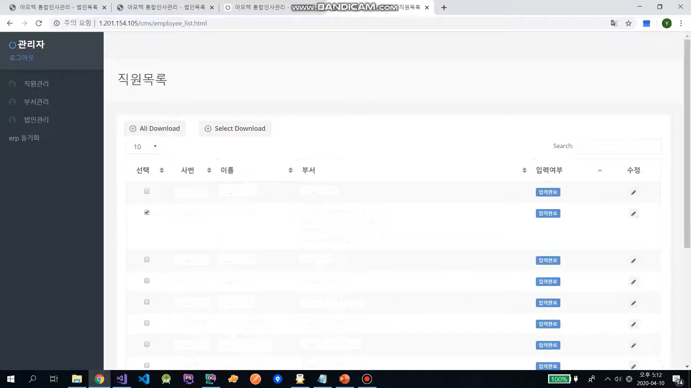

운전자가 주행 중 교통위반 상황을 목격했을 때 핸들의 블루투스 버튼을 누르면 블랙박스 영상 기록, 신고데이터[위치, 시간, 날씨]가 스마트폰으로 송출됩니다. 이후 안드로이드 앱에서
동영상 편집, 신고 정보를 수정한 후 신고 할 수 있습니다. 외주를 받아 진행했으며, 저는 이 중 안드로이드 앱, 관리자 페이지를 개발했습니다.
- 개발자 1명 [본인]
- 디자이너 1명
- PM 1명
- UI 구축 및 Retrofit 통신
- HGLVideoTrimmer 오픈소스를 이용한 동영상 편집 기능
- 웹 페이지에서 신고내역 변경에 따른 FCM 알림
- Google Map 3rd Party API를 활용하여 신고 위치 표시
- 네트워크 사용량을 조절하기 위해 Paging 기법 사용
- 그래프, 지도, 신고 목록 테이블을 포함한 웹 페이지 구축 및 서버와 Ajax 통신
- 신고 목록 엑셀 다운로드
[오픈소스 HGLVideoTrimmer를 활용한 동영상 편집 기능 구현]
처음부터 동영상 편집 기능을 구현하면 마감까지 모두 완료할 수 없었고 무엇보다 구현이 불확실했습니다. 그래서 상용화할 수 있는 동영상 편집 오픈소스 HGLVideoTrimmer를
활용했습니다. 먼저 오픈소스가 핸드폰 기종별로 정상 작동하는지 확인했습니다. 이후 오픈소스의 흐름을 이해한 다음, 디자인과 기능에 맞게 커스텀을 진행했습니다. 이때 모듈별로 입출력을
파악하며, 필요 기능을 추가하는 방식으로 진행했습니다.
[네트워크 사용량을 조절하기 위한 노력]
사용자의 신고 목록을 Recyclerview로 보여줄 때 신고된 양이 적다면 네트워크 사용량이 적어 괜찮지만, 신고 목록이 많아지면 네트워크 사용량이 많아지는 문제가 발생했습니다.
사용자가 항상 모든 신고 목록을 보는 것이 아니므로 필요할 때마다 신고 목록을 받아 오는 페이징 기법을 사용하여 네트워크 사용량을 조절했습니다. Recyclerview에서 제일 마지막
아이템을 스크롤 했을 때 마지막 index를 서버에 보내고, 서버로부터 받은 데이터를 Recyclerview 데이터에 추가하는 방식으로 진행했습니다. 이 문제가 크리티컬한 버그는
아니었지만, 네트워크 사용량을 조절했다는 점에서 의미가 있다고 생각합니다.
[Timeout]
사용자의 신고 목록을 엑셀로 다운로드 받을 때 API의 Response Time이 길어 timeout 문제가 발생했습니다. 이 API는 신고 목록을 다운로드 할 때만 사용하고 반응
속도가 중요한 것이 아니므로 timeout값을 늘려 쉽게 해결했습니다. 해결은 되었지만, Response Time이 길어지면 timeout이 왜 발생하는지 궁금하여 자료를
찾아보았습니다. 웹 서버와 통신할 때 Transport 계층에서는 TCP 프로토콜을 사용합니다. TCP 프로토콜은 반응속도보다 정확한 데이터가 더욱 중요하기 때문에 SYN, ACK
신호의 Response time이 너무 길다면 패킷의 오류로 판단함을 배웠습니다.
[Request 메시지 없이 Response 메시지를 받는 방법]
프로젝트의 관리자 페이지에서 특정 유저의 신고 정보를 변경하면 안드로이드 사용자에게 푸시 알림을 보내는 방법의 문제가 있었습니다. 웹 서버와 클라이언트가 통신할 때 Http 프로토콜을
사용하기 때문에 클라이언트의 Request 메시지 없이 서버가 Response 메시지를 보낼 수 없기 때문입니다. 구글링한 결과 FCM과 GCM을 통해 이 기능이 가능하다는 것을
찾았습니다. GCM은 FCM보다 구현 시 번거롭고 구글에서 FCM을 사용하길 권장하기 때문에 FCM을 통해 문제를 해결했습니다.
개발 기간 : 2019 03 ~ 2019.07
개발 툴 : Android Studio & Visual studio Code & PhpStorm & Datagrip & Postman
& Zeplin & SourceTree
개발 언어 : Java, html, css, javascript, PHP, MySQL
코드는 회사 규정상 gitlab private로 설정 되있고 해당 프로젝트의 경우 포트폴리오 사용여부에 고객사측에서 동의하였기 때문에
기재했습니다. 코드의 경우 로컬에서 혹은 moomin@softsquared.com 로그인 후 확인 할 수 있습니다.
Inha Cms Page
JSP & Servlet
본 프로젝트는 외주로 진행했고, 안드로이드 어플리케이션에서 인하대학교에 대해 소개하고, 관리자 페이지에서 유저, 배경 이미지를 관리합니다.
- 개발자 2명
- 웹서버는 Apache, DBSM은 MariaDB, 언어는 JSP를 이용해 서버 개발 진행
- 배경 이미지 변경
- 유저 관리
개발 기간 : 2019.02 ~ 2019.03
개발 툴: Eclipse & Putty & FileZilla
개발 언어 : JSP & Servlet & SQL
코드는 외주를 받았던 작업이기 때문에 github가 아닌 로컬에서 확인 할 수 있습니다.
배달의 민족 카피캣 프로젝트
Android
본 프로젝트는 (주) 소프트스퀘어드에서 수료 여부를 결정하기 위해 진행했습니다. 카피캣 프로젝트이다 보니 설계 과정이나 아이디어에서 시간을 쏟기보단 최대한 배달의 민족 어플과 비슷한
Flow에서 개발에 초점을 맞춰서 진행했습니다.
- Android UI 구축 및 Okhttp를 통한 서버 통신
- Kakao MAP, Keyword REST API 사용
안드로이드 어플리케이션 개발을 처음 해서 안드로이드를 공부하는데 시간을 오래 사용했습니다. Manifest부터 4대 주요 Component나 생명주기, ListView,
Fragment 등 많은 내용의 안드로이드에 대해 공부를 할 수 있었습니다. 뿐만 아니라 타기업의 API를 활용할 수 있는 3rd Party API에 대해서도 공부를 하며 서버와
어떻게 통신하면 되는지에 대한 OkHttp에 대해서도 배우는 시간을 가졌습니다. 개발 기간에 절반은 이러한 안드로이드 기초적인 것에 초점을 맞추어 공부 하였고 나머지 기간 동안 실제로
안드로이드 주요 UI및 API를 엮는데 시간을 사용했습니다.
이렇게 개발실력 향상뿐만 아니라 팀원들과 개발적으로 소통을 어떻게 해야 하는지도 또한 배웠습니다. 우선 팀원들과 소통을 할 때 제플린 및 슬랙이라는 프로그램을 이용하여 디자이너,
서버 개발자와 소통을했습니다. 이 과정에서 서버 개발자는 어떠한 일을 하고 디자이너는 무슨 일을 하지에 대해서 각자의 역할을 알아가는 시간을 가졌습니다.
개발 기간 : 2018.12 ~ 2019.02
개발 툴 : Android Studio & Postman & Zeplin
AI Kiosk
Android & Server
많은 지역에서 키오스크가 도입되고 있지만, 멀티 기기에 익숙하지 않은 분들은 키오스크를 사용하는 것이 불편하다는 취지에서 시작했습니다. 그래서 저희는 사용하기 편리한 AI 키오스크를
개발했습니다. 먼저 Face Detection을 수행 한 후 사진 속에서 CFR API를 통하여 성별 및 나이에 따라 메뉴를 추천해주고 사용자들이 키오스크와 음성 대화가 가능하도록
했습니다. 이 과정에서 음성 인식률을 높이기 위해 음성 후보정 처리를 진행했습니다.
- 개발자 3명
- 디자이너 1명
- Android에서 제공하는 Camera Face detection을 이용한 사용자 얼굴 실시간 감지
- CFR API를 사용하여 얼굴 특징파악
- CPV API를 사용하여 음성서비스 제공
- CSR API를 통해 사용자의 음성데이터를 text로 추출한다. 이때 좀 더 정확한 데이터를 얻기 위하여 서버 DB에서 후보정 처리 진행
- CFR API에서 얻은 데이터와 사용자 주문 내역을 비교하여 사용자에게 추천메뉴 제공
어플리케이션 시나리오는 사용자가 태블릿 근처로 오면 얼굴인식을 수행 후 해당 뷰를 JPG 변환 후 CFR API를 통해 얼굴 특징을 파악합니다. 이후 사용자 연령, 성별에 맞게 메뉴를
추천을 하고, 주문 내역을 바탕으로 서버에 데이터를 저장합니다.
본 프로젝트에서 Face Detection과 CFR API를 이용하여 얼굴에 대한 특징을 파악하는 기능구현과 음성인식에서의 후보정 처리 기능을 맡았습니다. 얼굴 인식은 Github
Opensource로 돼 있는 코드를 활용했으며, 음성 인식의 정확도를 높이기 위해 음성 인식 결과를 DB에 축적하는 방식으로 후보정 처리를 진행했습니다.
개발 기간 : 2020.02.13 ~ 2020.02.15
개발 툴 : Android Studio & PhpStorm & Datagrip & Postman & Zeplin &
SourceTree
개발 언어 : Java & PHP, MySQL
Inha - Taxi
Android & WEB & Server
인하대학교를 통학하는 학생 대부분은 주안역 앞에 있는 버스정류장에서 511 버스를 탑니다. 하지만 지각을 하거나 막차 시간 근처의 경우에는 택시를 타는 경우가 많습니다. 이때 여러
학생은 목적지는 같지만, 버스비보다 비싼 돈을 내고 혼자서 택시를 탑니다. 택시를 합승하지 않는 이유는 누가 택시를 탈지 모른다는 점과 그들의 목적지를 모른다는 점에 있습니다. 또한
신뢰할
수 없는 사람들과 같이 합승한다는 점도 불안할 것으로 생각됩니다. 그래서 저희는 인하대학교 학우라는 신뢰할 수 있는 사람들과 목적지를 공유할 수 있는 커뮤니케이션 어플리케이션을
개발했습니다.
- 개발자 4명으로 구성
- UI 구축 및 Retrofit 통신 [본인]
- Google Cloud Vision API 사용
- 3rd party API : Kakao Map, Kakao Keyword rest API 사용 [본인]
- Firebase에서 제공하는 Real time database를 사용한 채팅 기능
- NPM을 이용한 서버 개발
개발 기간 : 2019.09.28 ~ 2019.09.29
개발 Tool : Android Studio & Visual studio Code & Postman & Zeplin & WinSCP
& Putty
개발 환경 : Android flatform & WEB & NginX web server & PHP & MySQL
이런알람
Android
생활 속에서 외국인의 발음에 좀 더 익숙해지는 방편으로 알람 기능에 영어 발음 미션을 접목해 주기적으로 공부할 수 있는 안드로이드 앱을 개발했습니다.
- 안드로이드 2명 [본인은 UI 구축 및 알람 기능을, 다른 팀원은 음성 인식 개발]
- 디자이너 1명
- Broadcast Receiver, Service, Alarm Manager를 이용한 알람 기능 개발
- 시간, ID를 포함한 알람 주요 정보는 SQLite를 이용해 내장 DB에 저장
- 액티비티 생명주기, 스택을 활용하여 H/W 키 제어
[알람 동작 원리]
알람 등록 시, Pending Intent에 Notification ID와 어떤 Broadcast Receiver를 호출할지 설정했습니다. 이후 Intent를 Alarm
Manager에게 보내고, Alarm Manager는 SDK 버전에 따라 set, setExact, setExactAndAllowWhileIdle 알람 설정 함수를 실행시켰습니다.
알람 시간이 되면, OS에서 Broadcast 하여 해당 알람 ID를 가진 Broadcast Receiver가 수신하여 Service를 호출했습니다.
여기서 setRepeat, setInexactRepeating 반복 알람 함수를 사용하지 않은 이유는 API 19부터 발생한 부정확한 알람 시간 때문입니다. 따라서 알람이 울릴 때,
Pending Intent에서 넘어온 시간을 기준으로 알람을 재등록하는 방식으로 알람 기능을 구현했습니다. 5분 후 재알람과 같은 기능 역시 이와 유사하게 개발을 진행했습니다.
초기에 특정 기종에서 알람이 울리지 않는 문제가 발생했습니다. 이 문제는 SDK마다 지원하는 알람 설정 함수가 달라 발생했습니다. 따라서 안드로이드 공식 문서에서 알람 매니저가 알람
시간을 설정할 때 사용하는 함수[set, setExact, setExactAndAllowWhileIdle]를 찾아 OS 버전마다 다른 함수를 실행시켜 문제를 해결했습니다. 이를 통해
API를 사용할 때 어느 OS 버전까지 지원하는지 반드시 확인해야 함을 배웠습니다.
[Activity 생명주기와 스택]
사용자의 알람 강제 종료를 막기 위해 H/W Key 이벤트를 막는 기능을 기획했습니다. 백 버튼은 이벤트를 overriding 하여 문제를 쉽게 해결했지만 홈, 메뉴 버튼은 구글에서
이벤트를 전달하지 못하도록 막아 다른 방법으로 해결해야 했습니다. 저는 이를 액티비티 생명주기와 스택을 이용했습니다. 홈 키를 누르면 기본화면이 나와 onStop 함수가 실행됩니다.
이때 미션 액티비티를 재실행하도록 구성했습니다. 그리고 메뉴 버튼을 누르면 onPause 함수가 실행되므로, 현재 액티비티를 Activity Stack의 최상위로 올려주는 함수를
실행시켰습니다.
프로젝트를 통해 안드로이드 주요 4대 컴포넌트, 액티비티 스택/생명주기에 대해 깊은 학습을 할 수 있었습니다. 무엇보다 같은 코드여도 SDK마다 지원하는 함수가 다를 수 있음을
배웠습니다.
개발 기간 : 2019.06 ~ 2019.09
개발 툴: Android Studio & Zeplin
개발 언어: Java
인사 관리 프로젝트 [외주]
Android & WEB & Server

본 프로젝트는 외주를 받아 진행했으며, 000 회사 인사 관리 안드로이드 앱, 관리자 웹 페이지를 개발했습니다. 회장님이 태블릿으로 회사 조직도와 직원 정보를 확인할 수 있고,
관리자는 관리자 페이지에서 회사 조직도와 직원 정보를 수정할 수 있습니다. 1차 프로젝트 기간 동안 기획된 주요 기능을 만들고, 2차 프로젝트 기간 동안 사용자들의 피드백을 반영하며
유지보수 작업을 진행했습니다. 회사 개인 정보가 있는 관계로 영상 및 이미지 일부를 블라인드 처리했습니다.
- 개발자 1명 (본인)
- PM 1명
- 디자이너 1명
- 안드로이드 : 태블릿 UI 구축 및 Retrofit 통신
- 서버 : 법인, 부서, 직원 정보 데이터 DB 구축 [아래 사진 참고]
- 서버 : 직원 정보 검색기능 개발
- 서버 : 안드로이드 & 웹 페이지 API 개발
- 웹 페이지 : 화면 구축 및 Ajax를 이용한 통신
- 웹 페이지 : 직원 상세 정보 엑셀 다운로드
- 웹 페이지 : 엑셀 파일로 직원, 부서 관계 데이터 DB로 일괄 업로드
- 웹 페이지 : 직원 정보 입력 임시 저장 기능 개발
[데이터베이스 설계 경험]
1,000명 이상의 데이터가 DB에 포함되기 때문에 데이터를 일관성 있게 저장하고 데이터 중복을 최소화 하기 위해 노력했습니다. 즉, 학부 수업에서 배운 '정규화'를 생각하며 DB를
설계했습니다. 예를 들어, 한 테이블에 모든 사원 정보를 저장하는것이 아니라, 학력사항/경력사항/사원-부서 연결 테이블 등으로 분할하고 employeeID로 직원을 맵핑시켰습니다.
또한 많은 테이블에서 employeeId를 foreign key로 설정해 employeeId 데이터 일관성을 유지시켰습니다.
PK는 Clustered Index이므로 갱신 시 갱신된 행 이후 데이터들이 하나씩 새 위치로 이동합니다. 따라서 PK를 고정시키고 순차적으로 값을 저장시켰습니다. 예를 들어 부서
테이블의 PK를 문자열 부서 이름으로 설정했다면 부서를 삽입할때마다 데이터들의 위치가 바뀔 수 있습니다. 또한 PK를 Auto Increment가 아닌 랜덤한 값으로 설정했다면 불
필요한 데이터 이동이 생길 수 있습니다. 따라서 PK를 INT Type의 Auto Increment로 설정했습니다.
법인, 부서, 사원의 관계를 높이가 최대 6인 트리구조 형태로 저장했습니다. 각각의 법인은 루트 노드이며, internal 노드는 부서를 가리키고, 직원은 External 노드로
표현했습니다. 부서의 ParentID는 상위 부서 ID를 저장 했고, 최 상위 부서의 ParentID는 법인 ID로 저장시켰습니다. 이 과정에서 대댓글과 같은 부모 자식의 관계를
표현하는 방법을 배웠습니다.
[일 잘하는 개발자]
'커뮤니케이션'의 중요성을 배웠습니다. 오랜 기간 동안 유지보수를 진행 하면서 이슈 리스트 관리가 필수 조건이였습니다. 2차 프로젝트 기간 동안 기획된 내용 이외에 약 80개의 추가
요청사항이 있었고, 이를 공유 문서에 작성하면서 커뮤니케이션 오류를 최소화했습니다. 누락된 이슈가 없는지 체크했고 팀원들과의 요청 사항, 진행 상황을 수시로 공유했습니다. 또한 PM이
바뀌면서 인수인계 오류로 고객사와의 마찰이 생겼습니다. 그 당시 기회된 내용 이외에 추가 요청사항을 받아 들이며 마무리 했고, 회의 내용과 이슈 사항 등은 문서화하여 팀원들과
공유하는것이 좋다고 느꼈습니다.
개발 기간 : 1차 개발 기간 : 2019.10 ~ 2019.12 / 2차 개발 기간 : 2020.01.13 ~ 2020.04.01
개발 툴 : Android Studio & Visual studio Code & PhpStorm & Datagrip & Postman
& Zeplin & SourceTree
개발 언어 : Java, html, css, javascript, PHP, MySQL
코드는 회사 규정상 gitlab private로 설정 되있고 해당 프로젝트의 경우 포트폴리오 사용여부에 고객사측에서 동의하였기 때문에
기재했습니다. 코드의 경우 로컬에서 혹은 moomin@softsquared.com 로그인 후 확인 할 수 있습니다.
인스타투어
Android
20-30 세대에서 인기있는 SNS 중 인스타그램 데이터를 활용해 사용자들에게 여행지 정보를 제공해주는 서비스입니다.
안드로이드 개발자 [본인]
서버 개발자
데이터 분석 개발자
디자이너
- UI 구축 및 Retrofit 통신 [본인]
- 최근 검색 데이터를 RoomDB 이용해 저장 [본인]
- AWS의 S3 저장소에 이미지 업로드 [본인]
- AWS의 Cognito를 통한 유저 관리 [본인]
- 인스타그램 게시글 크롤링 후 전처리 과정
- Graph DB에 게시글들 라벨링
개발 기간 : 2020.04 ~ 2020.06
개발 Tool : Android Studio & Postman & Zeplin
개발 언어 : Java
모아리 [모두 모아보는 리뷰]
Android
현재 나와 있는 문화생활 기록 앱들은 SNS 공유 기능, 백업 기능 부재 등 불편한 점이 있었습니다. 그래서 기존 앱들의 불편한 점은 개선하고 좋은 기능은 레퍼런스로
참고하여 앱을 출시했습니다. 서로 다른 직무를 가진 팀원들과 프로젝트를 진행하면서 협업 능력이 향상됐습니다.
- UI 구축 및 Retrofit 통신
- 네트워크 사용량을 조절하기 위해 Paging 기법 사용
- 사진 편집[Ucrop 라이브러리 이용] 및 업로드 기능
- View를 JPG로 변경 후 SNS 공유 기능
[서로 다른 직무를 가진 팀원들과의 커뮤니케이션]
디자이너와 소통할 때 코드나 용어보다는 이미지나 동영상을 이용해서 소통했습니다. 예를 들어 이번 프로젝트의 메인 화면에서 큐레이션 화면으로 전환할 때, 디자이너는 화면 전환의 어떤
애니메이션 효과가 가능한지 몰랐습니다. 그래서 가능한 화면 전환 애니메이션 효과들을 디자이너에게 프로토타입으로 보여주면서 설명했습니다. 제플린으로[개발자, 디자이너 협업 툴] 디자인을
받으면 한 번에 개발을 모두 끝내는 것이 아니라,
서로 피드백을 주고받으며 개발과 디자인을 맞춰갔습니다. 또한, 팀원들이 개발 상황을 알아야 한다고 생각하여, 수시로 슬랙[온라인 메신저]에 개발된 기능을 동영상으로 보여주면서 진행
상황을 공유했습니다.
서버 개발자와 API 명세서로 소통했습니다. 초기에 화면마다 어떤 Request, Response의 정보가 필요한지 협의한 후, 서버 개발자가 API 명세서에 정보를 등록하는 방식으로
진행했습니다. 예를 들어 이번 프로젝트의 리뷰 목록을 보는 화면에서 다음과 같이 진행했습니다. Request 정보는 카테고리 id, 페이징을 위한 리뷰 index, 사용자를 구별하기
위한
token값이 필요하겠고, Response 정보는 배열 형식의 사진 URL, 제목, id를 포함하는 것으로 함께 타협했습니다. 이후, 서로 API 명세서를 보며 개발을 맞춰갔습니다.
디자이너와 용어보다는 이미지, 동영상으로 소통하고, 서버 개발자와는 API 명세서로 소통하게 되면서 커뮤니케이션 오류도 줄어들고 상대방의 의견을 좀 더 정확히 알아들을 수 있었습니다.
서로 다른 분야의 팀원들과 프로젝트를 함께 진행했다는 점에서 커뮤니케이션 방식을 배울 수 있는 좋은 경험이었습니다.
[기획적으로는 가능하지만, 기능을 이렇게 바꾸는 건 괜찮나요?]
프로젝트를 검토하면서, 구현이 힘든 기획이 생각보다 많다는 것을 느꼈습니다. 이때 이 기능은 안 된다고 막기보단, "기획적으로는 가능하지만, 기능을 이렇게 바꾸는 건 괜찮나요?"로
해결하는 방식을 배웠습니다. 예를 들어, 이번 프로젝트에서 디자이너와 서버 개발자의 요청으로 SNS 공유 기능을 넣었습니다. 이는 인스타그램의 스토리와 유사하게 사진 편집과 글자를
옮기는 기능을 수행한 후 이미지를 SNS에 공유하는 기능이었습니다. 하지만 모든 기능을 구현하기에는 시간이 그렇게 많지 않았고 구현 가능성이 크지 않았기 때문에 다음과 같은 방식으로
협의하여 해결했습니다. 글자를 옮기지 않고 고정하고, 사진 편집 기능은 안드로이드와 IOS에 유사한 오픈소스 사진 편집 라이브러리를 채택했습니다. 이후 사용자가 보는 뷰[사진, 제목,
별점]를 이미지로 변환한 후 SNS에 공유하는 방식으로 진행했습니다. 이 과정에서 먼저 기획이 왜 필요한지를 검토하고 기술적으로 구현이 힘든 부분은 팀원들과 조율하여 기획에 맞게
기능을 조금 수정하는 방식을 배울 수 있었습니다. 즉, 기획 단계에서 기술적으로 무조건 안 된다고 막기보다는, 기획에 맞게 기능을 바꾸는 유연한 태도를 배울 수 있었습니다.
개발 기간 : 2020.02 ~ 2020.03
개발 툴 : Android Studio & Packet Capture & Source Tree
개발 언어 : Java
수상 경력
자기 소개서
[다양한 개발 경험을 통해 개발자의 길을 확신했습니다.]
어렸을 때 같은 블록을 가지고 다양한 작품을 만들 수 있다는 점에서 레고를 좋아했습니다. 저가 만든 것을 부모님께 보여줄 때 행복했고, 친구들과 함께 파트를 나누어 레고를 조립하며
학창시절을 보냈습니다. 이러한 성향 때문에 자연스럽게 컴퓨터 공학을 전공했고, 프로그래밍과 친숙해지기 위해 논리적 사고가 핵심인 알고리즘 문제를 해결해 나갔습니다. 이후 많은
프로젝트를 진행했습니다. 스타트업에서 프로젝트를 납품하고 팀원들과 함께 많은 해커톤에 나가 6번의 수상을 했습니다. 또한, 기본기의 중요성을 깨닫고 2학년 말부터 CS 블로그를
운영하기 시작했습니다. 그중 일상생활을 리뷰하는 `모두 모아보는 리뷰-모아리` 앱을 출시하는 과정에서 개발자의 길을 확신했습니다. 실사용자들의 리뷰를 들으며 뿌듯했고 모듈별로 원하는
기능을 완성 시키고 조합하는 과정에서 개발에 푹 빠졌습니다.
[개발일기를 통한, 개발자로서 고민하고 성장하는 삶을 살고 싶습니다.]
IT 기술은 빠르게 변화하기 때문에 개발자는 지속적인 공부가 필요합니다. 따라서 신입 개발자일 때 초기 개발 습관이 중요하다고 생각합니다. 지금까지는 CS를 중점으로 블로그에
정리했지만, 회사에 다니며 많은 개발 이슈를 블로그에 정리할 것입니다. 사수, 동료들로부터 개발 조언을 받을 수도 있고 스스로 이슈를 해결하며 느낀 점도 많을 것이라 생각합니다. 즉,
오늘 하루 어떤 개발 이슈가 있었고, 이슈를 해결했다면 어떻게 문제를 해결해나갔는지를 블로그에 기록할 것입니다. 개발자로서 고민하고 성장하며, 즐겁게 개발하고 싶습니다.